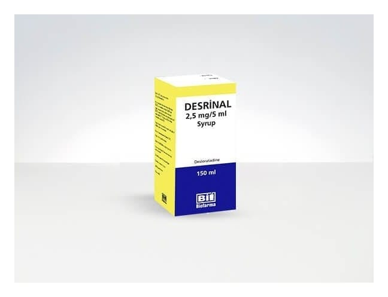

Desrinal 2.5 mg/5 ml 150 ml Şurup

Ne için kullanılır
KT · Bölüm 1DESRİNAL®, bir antihistaminik ilaç sınıfından desloratadini içerir.
DESRİNAL®çocuklardan koruma kapaklı 150 mL’lik şişelerde ambalajlanmıştır.
DESRİNAL®, uyku hali oluşturmayan antialerjik bir ilaçtır. Alerjik reaksiyonlar ve alerji belirtilerinin kontrol altına alınmasına yardımcı olur.
DESRİNAL®alerjik nezle ile ilişkili hapşırık , burunda akıntı ve kaşıntı, damakta kaşınma ve gözlerde kaşınma, kızarıklık veya yaşarma gibi belirtileri (örneğin saman nezlesi, ev tozu akarına karşı alerji) giderir. Bu ilacı kullanmaya başlamadan önce bu KULLANMA TALİMATINI dikkatlice okuyunuz, çünkü sizin için önemli bilgiler içermektedir. • Bu kullanma talimatını saklayınız. Daha sonra tekrar okumaya ihtiyaç duyabilirsiniz. • Eğer ilave sorularınız olursa, lütfen doktorunuza veya eczacınıza danışınız. • Bu ilaç kişisel olarak sizin için reçete edilmiştir, başkalarına vermeyiniz. • Bu ilacın kullanımı sırasında, doktora veya hastaneye gittiğinizde doktorunuza bu ilacı kullandığınızı söyleyiniz. • Bu talimatta yazılanlara aynen uyunuz. İlaç hakkında size önerilen dozun dışında yüksek veya düşük doz kullanmayınız.
DESRİNAL®ayrıca, ürtiker (alerji ile görülebilen bir deri hastalığı) ile birlikte kaşıntının giderilmesi, derideki kabartı ve kızarıklık gibi belirtilerin ortadan kaldırılmasında da kullanılır.
Bu belirtilerin giderilmesi tüm gün boyunca sürer ve normal günlük aktivitelerinize devam etmenize ve uyumanıza yardımcı olur.